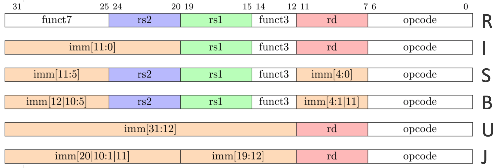
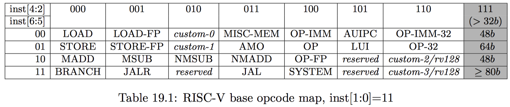

[RISC-V Architecture Training] @DEMO: Create custom instructions
Custom instruction
The most attractive feature of RISC-V
- Extensibility
- Differentiation
- Software hardware co-design
- Domain-specific applications
- Example
- Integer MAC (multiplication and accumulation) for matrix operation
- Multiple load/store fusion for smaller code footprint
- Customized vector operations tailored for your application
Custom instruction / Difficulties
Most difficult thing is NOT in hardware, but in compiler
- How to let compiler understand your intention and generate corresponding instructions
- For example, automatic vectorization is difficult with vector/SIMD instructions
- The compiler has to understand the
forloop, as well as the implemention details
- The compiler has to understand the
@DEMO: new MAC instruction
MAC = multiplication and accumulation
c += a * bRD = RD + RS1 * RS2
- Most common operations in matrix multiplication
How to handle Overflow?
- Use separate instructions to read out higher/lower parts
- Just like
mulandmulh
- Just like
- Use implicitly defined register pair to store result.
- If
RD == t0, then{t0, t1} = {t0, t1} + RS1 * RS2
- If
- Use implicit dedicated register to store result
- Need extra command to move in/out of this implicit dedicate register
- Simple ignore overflow bits, just other mechanism to detect overflow
- Just like
addandsub - Choose this approach in this demo
- Just like
@DEMO / Select instruction encoding
Which format?

- Type R: because we need all
rd,rs1andrs2while no immediate number
@DEMO / Select instruction encoding
Which opcode?

-
We can use custom-0:
inst[6:2] = 0b00010 = 0x02whileinst[1:0] = 0b11as always for 32-bit instruction -
funct3 = 0b000andfunct7 = 0b0000000
@DEMO / GNU toolchain support
How to use new instruction?
- Write binary code directly
- Very hard to use/debug
- Quick and dirty
- Write embedded assembly code (GNU toolchain: binutils)
- Easier to use, manual/full control
- Still not very obvious
- Compiler automatically pickup the routine (GNU toolchain: GCC)
- Easy to use but hard to control
- Compiler is not that intelligent
@DEMO / Binutils
We need Binutils to support assembly code
1. Generate opcodes
> cd ~/riscv-git/riscv-tools/riscv-opcodes
Add the following line to opcodes.custom
# R-type
custom0.madd.s rd rs1 rs2 rs3 26..25=0 14..12=0 6..2=0x02 1..0=3
Generate opcode:
> cat opcodes-custom | ./parse-opcodes -c | grep CUSTOM0
#define MATCH_CUSTOM0_MADD_S 0xb
#define MASK_CUSTOM0_MADD_S 0x600707f
DECLARE_INSN(custom0_madd_s, MATCH_CUSTOM0_MADD_S, MASK_CUSTOM0_MADD_S)
@DEMO / Binutils
2. Add opcode to binutils
-
Add previously generated opcode lines to
~/riscv-git/riscv-gnu-toolchain/riscv-binutils/include/opcode/riscv-opc.h -
Add the following line to
const struct riscv_opcode riscv_opcodes[]in~/riscv-git/riscv-gnu-toolchain/riscv-binutils/opcodes/riscv-opc.c
{"custom0.madd.s", 0, {"I", 0}, "d,s,t,r", MATCH_CUSTOM0_MADD_S, MASK_CUSTOM0_MADD_S, match_opcode, 0 },
Here lower case d,s,t,r means GPR registers as destination, source, target, register3.
.footnote[This is the only integer instruction that has 4 operands: 3 inputs and 1 output]
@DEMO / Binutils
2. Add opcode to binutils
- Default compiler only support
d,s,tas GPR registers for integer operation - Add support for
'r'inprint_insn_argsin file~/riscv-git/riscv-gnu-toolchain/riscv-binutils/opcodes/riscv-dis.c
for (; *d != '\0'; d++) {
switch (*d) {
...
case 'r':
print (info->stream, "%s", riscv_gpr_names[EXTRACT_OPERAND (RS3, l)]);
break;
...
@DEMO / Binutils
recompile gnu-toolchain
> cd ~/riscv-git/riscv-gnu-toolchain
> mkdir build-rv64i-custom-newlib
> cd $_
> ../configure --prefix=/opt/riscv/rv64i-custom \
--with-arch=rv64i \
--with-abi=lp64
> make -j6 | tee log
@LAB: Try it out with new GCC assembler
// ~/riscv-training/lab/26-lab.custom-inst/test-asm.c
include <stdio.h>
int main(void) {
int a, b, c;
a = 5;
b = 2;
c = 0;
asm volatile
(
* "custom0.madd.s %[z], %[a], %[b], %[c]\n\t"
: [z] "=r" (c)
: [a] "r" (a), [b] "r" (b), [c] "r" (c)
);
if ( c != 10.0 ){
printf("@FAIL\n");
return 1;
}
printf("@PASS\n");
return 0;
}
With old GCC
> cd ~/riscv-training/lab/26-lab.custom-inst
> make test-asm
*/opt/FreedomStudio-2019-08-2-lin64/SiFive/riscv64-unknown-elf-gcc-8.3.0-2019.08.0/bin/riscv64-unknown-elf-gcc test-asm.c -o test-asm.elf
test-asm.c: Assembler messages:
*test-asm.c:9: Error: unrecognized opcode `custom0.madd.s a5,a5,a4,a3'
*../make.compile.in:13: recipe for target 'test-asm.elf' failed
make[1]: *** [test-asm.elf] Error 1
make[1]: Leaving directory '/mnt/hgfs/riscv-training/lab/26-lab.custom-inst'
makefile:11: recipe for target 'test-asm' failed
make: *** [test-asm] Error 2
With new GCC
> make test-asm-correct
*/opt/riscv/rv64i-custom/bin/riscv64-unknown-elf-gcc test-asm.c -o test-asm.elf
make[2]: Leaving directory '/mnt/hgfs/riscv-training/lab/26-lab.custom-inst'
make test-asm.elf.dump
make[2]: Entering directory '/mnt/hgfs/riscv-training/lab/26-lab.custom-inst'
/opt/riscv/rv64i-custom/bin/riscv64-unknown-elf-objdump -d test-asm.elf > test-asm.elf.dump
make[2]: Leaving directory '/mnt/hgfs/riscv-training/lab/26-lab.custom-inst'
make[1]: Leaving directory '/mnt/hgfs/riscv-training/lab/26-lab.custom-inst'
@DEMO / SPIKE
Need to add corresponding custom instruction support in SPIKE as golden reference
Regenerate encoding.h
cd ~/riscv-git/riscv-tools/riscv-opcodes
cp encoding.h new-encoding.h
cat opcodes opcodes-rvc-pseudo opcodes-rvc opcodes-custom | ./parse-opcodes -c >> new-encoding.h
# this time we can use the whole file
cp new-encoding.h ~/riscv-git/riscv-tools/riscv-isa-sim/riscv/encoding.h
cp new-encoding.h ~/riscv-git/riscv-tools/riscv-isa-sim/fesvr/encoding.h
New instruction heading file
Create instruction behavior heading file for new MAC instruction
~/riscv-git/riscv-tools/riscv-isa-sim/riscv/insns/custom0_madd_s.h
// filename: custom0_madd_s.h
require_extension('I');
WRITE_RD(sext_xlen(RS1 * RS2 + RS3));
To support using RS3 as the 3rd source register, we need to change ~/riscv-git/riscv-tools/riscv-isa-sim/riscv/decode.h
#define RS1 READ_REG(insn.rs1())
#define RS2 READ_REG(insn.rs2())
#define RS3 READ_REG(insn.rs3())
Add new instruction to riscv_insn_list inside file:
~/riscv-git/riscv-tools/riscv-isa-sim/riscv/riscv.mk.in
Add to SPIKE disassember
So that it can be correctly disassemble new instruction
~/riscv-git/riscv-tools/riscv-isa-sim/spike_main/disasm.cc
// new xrs3 argument to support 3rd source register in MAC
struct : public arg_t {
std::string to_string(insn_t insn) const {
return xpr_name[insn.rs3()];
}
} xrs3;
disassembler_t::disassembler_t(int xlen)
{
...
#define DEFINE_RTYPE(code) DISASM_INSN(#code, code, 0, {&xrd, &xrs1, &xrs2})
// to support 3rd source register
#define DEFINE_R3TYPE(code) DISASM_INSN(#code, code, 0, {&xrd, &xrs1, &xrs2, &xrs3})
...
DEFINE_RTYPE(add);
DEFINE_R3TYPE(custom0_madd_s); // MAC
...
}
Compile SPIKE
cd ~/riscv-git/riscv-tools
source ~/docker/dev/riscv.sh/rv64i-custom.sh
./build-spike-only.sh
Try it out with old SPIKE
/opt/FreedomStudio-2019-08-2-lin64/SiFive/riscv64-unknown-elf-gcc-8.3.0-2019.08.0/bin/spike \
/opt/FreedomStudio-2019-08-2-lin64/SiFive/riscv64-unknown-elf-gcc-8.3.0-2019.08.0/riscv64-unknown-elf/bin/pk \
test-asm.elf | tee test-asm.spike.log
bbl loader
z 0000000000000000 ra 000000000001010c sp 000000007f7e9b30 gp 00000000000150d8
tp 0000000000000000 t0 00000000000103fc t1 000000000000000f t2 0000000000000000
s0 000000007f7e9b50 s1 0000000000000000 a0 0000000000000001 a1 000000007f7e9b58
a2 0000000000000000 a3 0000000000000000 a4 0000000000000002 a5 0000000000000005
a6 000000000000001f a7 0000000000000000 s2 0000000000000000 s3 0000000000000000
s4 0000000000000000 s5 0000000000000000 s6 0000000000000000 s7 0000000000000000
s8 0000000000000000 s9 0000000000000000 sA 0000000000000000 sB 0000000000000000
t3 0000000000000000 t4 0000000000000000 t5 0000000000000000 t6 0000000000000000
pc 0000000000010228 va 0000000068e7f78b insn 68e7f78b sr 8000000200046020
*An illegal instruction was executed!
Try it out with new SPIKE
/opt/riscv/rv64i-custom/bin/spike \
/opt/riscv/rv64i-custom/riscv64-unknown-elf/bin/pk test-asm.elf | tee test-asm.spike.log
bbl loader
fesvr::sys_getmainvars (0x 8000d640 800 0 0 0 0 0)
fesvr::sys_openat (0x ffffffffffffff9c 8000d69b d 0 0 0 0)
fesvr::sys_pread (0x 3 8000cfd0 40 0 0 0 0)
fesvr::sys_pread (0x 3 8000d240 70 40 0 0 0)
fesvr::sys_pread (0x 3 8082a000 1000 3000 0 0 0)
fesvr::sys_pread (0x 3 8082b000 850 4000 0 0 0)
fesvr::sys_pread (0x 3 80826000 1000 0 0 0 0)
fesvr::sys_pread (0x 3 80829000 898 3000 0 0 0)
fesvr::sys_pread (0x 3 80828000 1000 2000 0 0 0)
fesvr::sys_fstat (0x 1 80024df0 0 0 0 0 0)
fesvr::sys_pread (0x 3 80827000 1000 1000 0 0 0)
fesvr::sys_close (0x 3 0 0 0 0 0 0)
fesvr::sys_write (0x 1 8082b8f0 6 0 0 0 0)
*@PASS
fesvr::sys_exit (0x 0 0 0 0 0 0 0)
@DEMO / GCC
Only use assembly is not enough, we need GCC to automatically generate new instruction from C code
Define new instruction
~/riscv-git/riscv-gnu-toolchain/riscv-gcc/gcc/config/riscv/riscv.md
;; custom0.madd.s
(define_insn "fmasi4"
[(set (match_operand:SI 0 "register_operand" "=r")
(fma:SI (match_operand:SI 1 "register_operand" " r")
(match_operand:SI 2 "register_operand" " r")
(match_operand:SI 3 "register_operand" " r")))]
"TARGET_64BIT"
"custom0.madd.s\t%0,%1,%2,%3"
[(set_attr "type" "imadd")
(set_attr "mode" "SI")]
)
Define new instruction
fmasi4is the standard function namefma= multiply add fusionsiis the mode (in the doc, it’s abbreviated as m).simeans full-word integer4means 4 operands, 3 on the right hand side, 1 on the left- More definition can be found at https://gcc.gnu.org/onlinedocs/gccint/Standard-Names.html
custom0.madd.s\t%0,%1,%2,%3is the abstraction of assembly code
Reference at Introduction to Machine Description
Recompile GCC
> cd ~/riscv-git/riscv-gnu-toolchain; mkdir build-rv64i-custom-newlib; cd $_
> ../configure --prefix=/opt/riscv/rv64i-custom --with-arch=rv64i --with-abi=lp64
> make -j6 | tee log
Source code
~/riscv-git/riscv-training/26-lab.custom-inst/custom-inst-gcc.c
sum = 0;
for (i=0; i<4; i++) {
a = byte_matrix_a[x][i];
b = byte_matrix_b[i][y];
* sum += a * b;
}
Try it out without GCC support
Compile
/opt/FreedomStudio-2019-08-2-lin64/SiFive/riscv64-unknown-elf-gcc-8.3.0-2019.08.0/bin/riscv64-unknown-elf-gcc \
custom-inst-gcc.c -o custom-inst-gcc.elf > custom-inst-gcc.elf.dump
/opt/FreedomStudio-2019-08-2-lin64/SiFive/riscv64-unknown-elf-gcc-8.3.0-2019.08.0/bin/riscv64-unknown-elf-objdump \
-d custom-inst-gcc.elf > custom-inst-gcc.elf.dump
SPIKE still pass
/opt/FreedomStudio-2019-08-2-lin64/SiFive/riscv64-unknown-elf-gcc-8.3.0-2019.08.0/bin/spike \
/opt/FreedomStudio-2019-08-2-lin64/SiFive/riscv64-unknown-elf-gcc-8.3.0-2019.08.0/riscv64-unknown-elf/bin/pk \
custom-inst-gcc.elf | tee custom-inst-gcc.spike.log
bbl loader
@PASS
Try it out with GCC support
Compile
/opt/riscv/rv64i-custom/bin/riscv64-unknown-elf-gcc custom-inst-gcc.c -o custom-inst-gcc.elf
SPIKE
/opt/riscv/rv64i-custom/bin/spike /opt/riscv/rv64i-custom/riscv64-unknown-elf/bin/pk custom-inst-gcc.elf | tee custom-inst-gcc.spike.log
bbl loader
dfesvr::sys_getmainvars (0x 8000d640 800 0 0 0 0 0)
fesvr::sys_openat (0x ffffffffffffff9c 8000d69b 14 0 0 0 0)
fesvr::sys_pread (0x 3 8000cfd0 40 0 0 0 0)
fesvr::sys_pread (0x 3 8000d240 70 40 0 0 0)
fesvr::sys_pread (0x 3 80839000 1000 12000 0 0 0)
fesvr::sys_pread (0x 3 8083a000 490 13000 0 0 0)
fesvr::sys_pread (0x 3 80826000 1000 0 0 0 0)
fesvr::sys_pread (0x 3 80829000 1000 3000 0 0 0)
fesvr::sys_pread (0x 3 80837000 1000 11000 0 0 0)
fesvr::sys_pread (0x 3 8082a000 1000 4000 0 0 0)
fesvr::sys_pread (0x 3 8082d000 1000 7000 0 0 0)
fesvr::sys_pread (0x 3 80833000 1000 d000 0 0 0)
fesvr::sys_pread (0x 3 80835000 1000 f000 0 0 0)
fesvr::sys_fstat (0x 1 80024df0 0 0 0 0 0)
fesvr::sys_pread (0x 3 8082e000 1000 8000 0 0 0)
fesvr::sys_pread (0x 3 8082f000 1000 9000 0 0 0)
fesvr::sys_write (0x 1 8083a570 6 0 0 0 0)
@PASS
fesvr::sys_exit (0x 0 0 0 0 0 0 0)
Compare the deassembled code
> grep custom0.madd.s correct/custom-inst-gcc.elf.dump
10e8c: 494b748b custom0.madd.s s1,s6,s4,s1
11364: 79bb7d8b custom0.madd.s s11,s6,s11,a5
12fb0: b0e7f78b custom0.madd.s a5,a5,a4,s6
14b6c: 48e7f48b custom0.madd.s s1,a5,a4,s1
16b04: 80f5f58b custom0.madd.s a1,a1,a5,a6
...
> grep custom0.madd.s correct/custom-inst-gcc.elf.dump | wc -l
22
> grep custom0.madd.s wrong/custom-inst-gcc.elf.dump | wc -l
0
@LAB: custom instruction
Create custom instruction to implement Sigmoid
$$S(x)=1/(1+e^{-x})=e/(e^x+1)$$